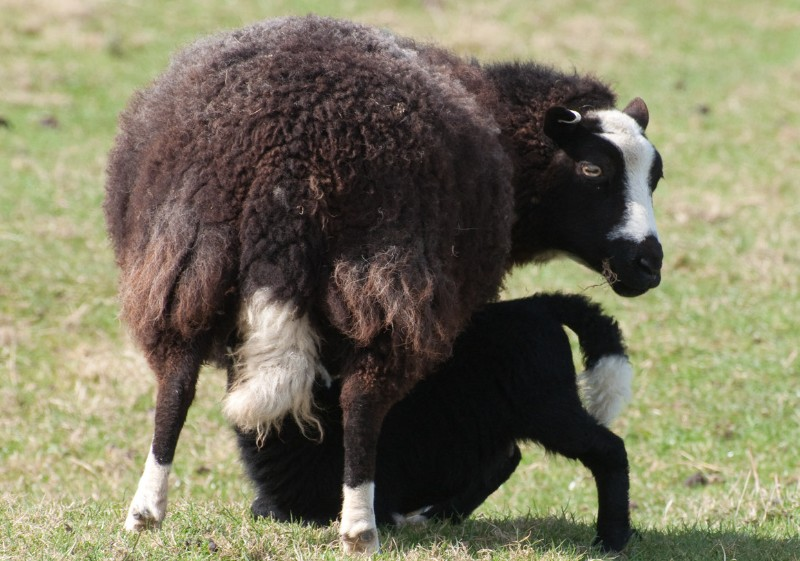

Available Sheep


Welsh Mountain ewe breed
A female sheep, especially when fully mature. A hybrid of a ewe and a buck (a male goat) is called a sheep-goat hybrid (only a single such animal has been confirmed), and is not to be confused with the sheep-goat chimera, though both are known as geep. Visual differences between sheep and goats include the beard of goats and divided upper lip of sheep.
Characteristics
1.They are mainly raised for wool and meat production especially when crossed with the progeny of a Welsh Mountain ewe.
2.Behavior. Sheep are most comfortable with their flock, and they tend to run if approached or spooked
3.Reproduction
4.Terminology.